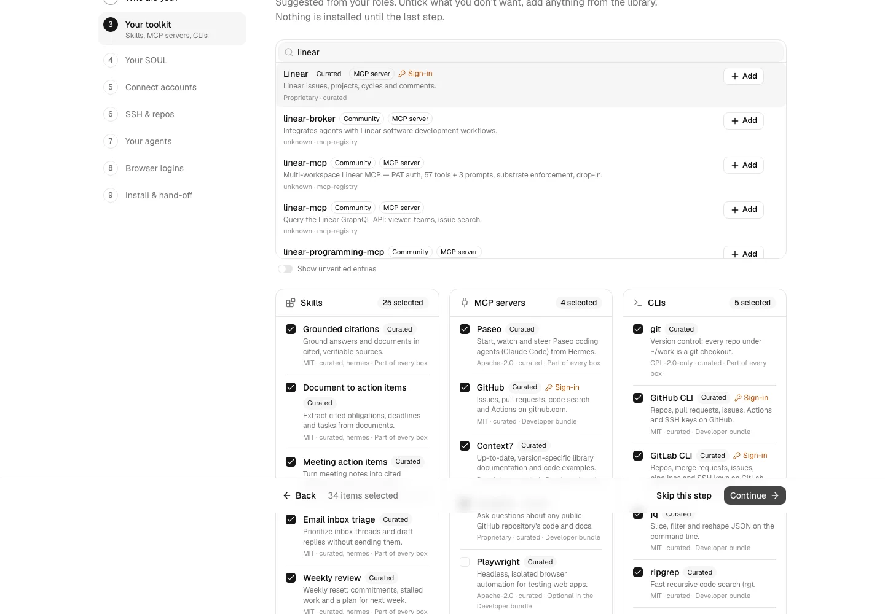
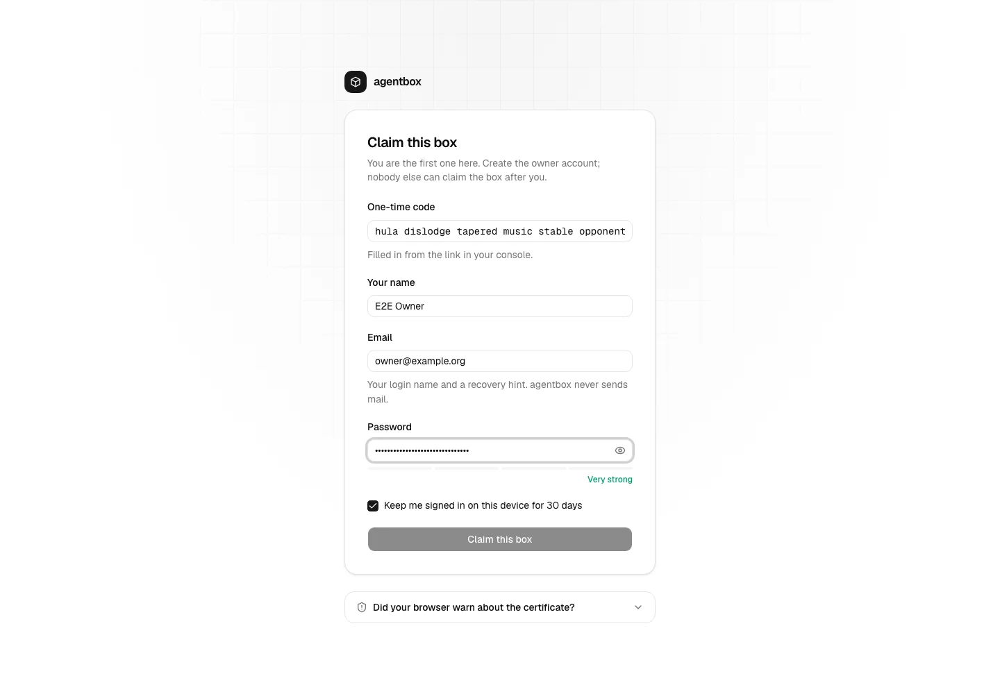
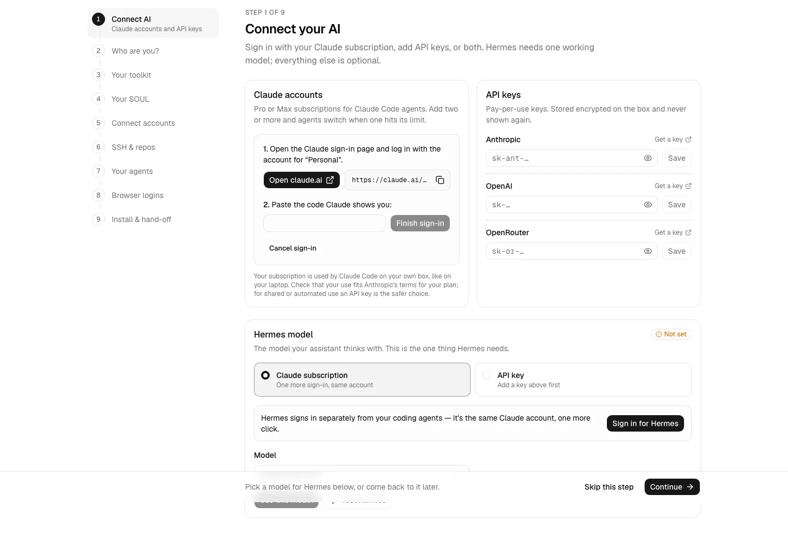
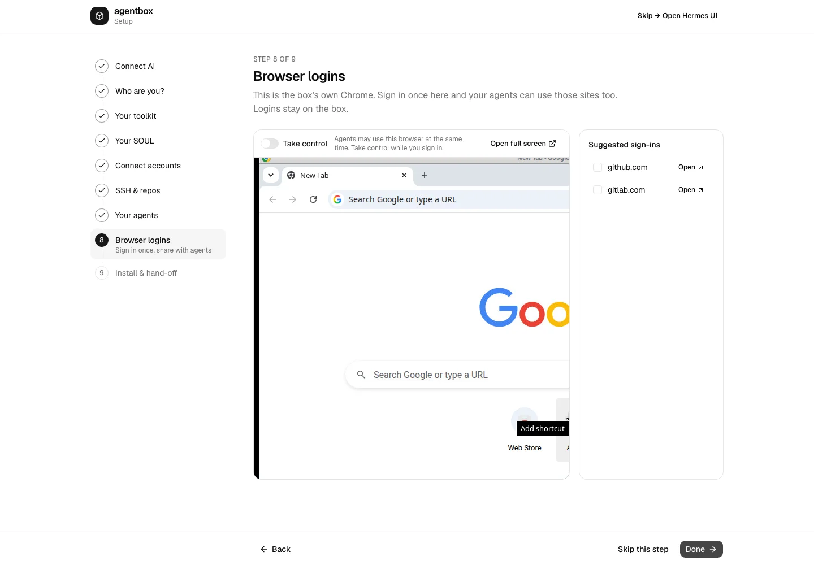
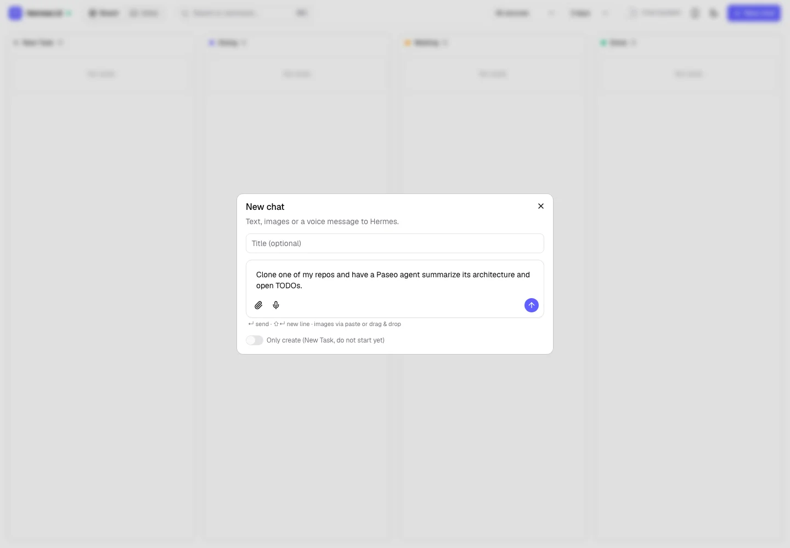
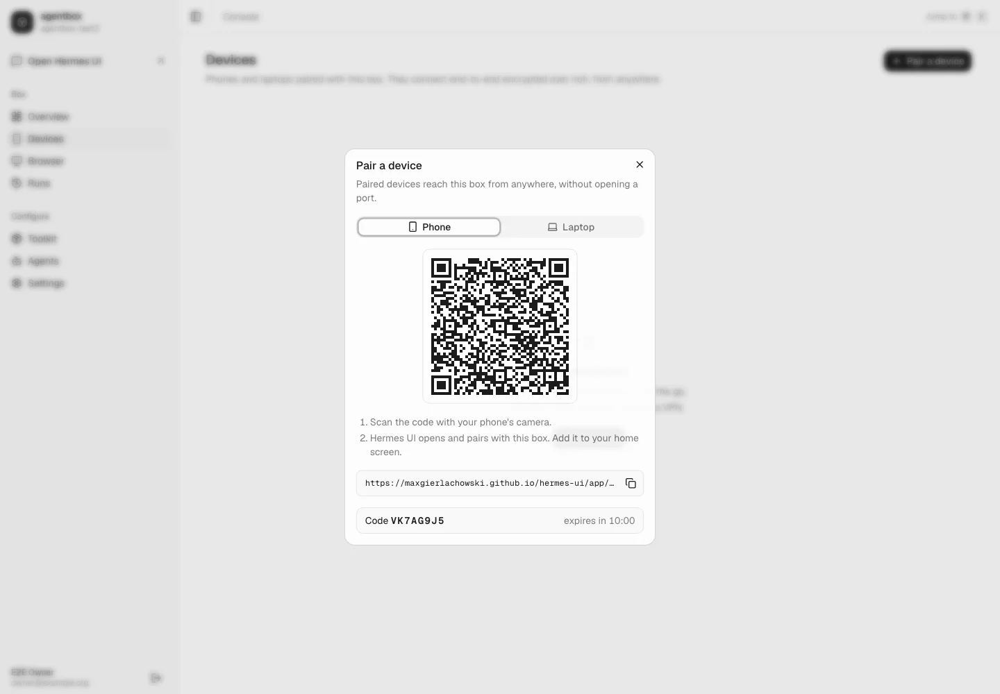

Hermes agent
Nous Research
The orchestrator you talk to: memory, skills, cron jobs, profiles with their own SOUL, Slack, voice. Runs from the upstream release tag, unmodified; agentbox only writes config, skills and plugins.
One command installs an orchestrating agent, coding agents and a logged-in browser they share, and makes them reachable from your laptop and phone over an end-to-end encrypted connection.

curl -fsSL https://github.com/MaxGierlachowski/agentbox/releases/download/v0.1.0-rc.1/install.sh | sudo AGENTBOX_UP=1 shThe orchestrating agent you talk to. It plans, remembers and delegates.
Coding agents in git worktrees, started and watched by Hermes.
You log in to sites once in the streamed browser; agents use the sessions.
Laptop and phone reach the box end-to-end encrypted, without port forwarding.
The installer sets the box up; a guided onboarding in the browser connects your accounts. The screenshots below are from a real box.
Run the one-liner. It checks the OS, installs every pinned component, starts nine services and prints a URL with a one-time code.
Open the URL from a laptop on the same network and enter the six-word code. You become the only owner; the code is burned.
Connect your AI, pick your role, review the suggested skills, MCP servers and CLIs, sign in to GitHub and GitLab, add SSH keys and repos, accept agent profiles, and log in to sites in the box's browser.
The hand-off opens Hermes UI with a first task ready to send. Pair your phone with a QR code and keep working from anywhere.





agentbox connect.agentbox writes almost no agent code of its own. It installs existing projects at pinned versions, checks their SHA-256, and connects them: config, secrets, systemd units, one login, one device list.
Out
Back
agentbox connect/ config UI/hermes/ Hermes UI/browser/ Chrome streamFirst access only: a browser on the same network opens https://<lan-ip>:8443 (self-signed, fingerprint printed) and reaches the same Caddy. On a VM with a public IP that listener stays off and you use an SSH tunnel instead.
A single Bun binary: installer and repair (agentbox up), the config UI and onboarding, an age-encrypted secret store, the device registry, and the systemd units that run everything below. Its UI is for setting the box up; Hermes UI is for working with it.
The orchestrator you talk to: memory, skills, cron jobs, profiles with their own SOUL, Slack, voice. Runs from the upstream release tag, unmodified; agentbox only writes config, skills and plugins.
Board and inbox for Hermes sessions, approvals and Paseo agents. Served at /hermes/ on the box and as an installable web app on your phone.
Runs Claude Code (and Codex) agents headless in git worktrees. On the box it listens on loopback only, with its relay and web UI off.
An MCP server and Paseo plugin that lets Hermes list, start, steer and watch Paseo agents, and that publishes their events.
A Paseo plugin that puts several Claude subscriptions behind one provider, each with its own config directory, so agents can switch when one hits its limit.
A Hermes plugin. When a Paseo agent finishes a turn, asks for permission or closes, the event continues the Hermes session that started it. No webhooks, no polling scripts.
iroh-gateway is the box's only remote entry: it forwards HTTP, WebSocket and SSE from allow-listed devices to Caddy. iroh-fetch is the client side, in the Hermes UI web app and in agentbox connect.
The networking library under both. Devices dial each other by public key over QUIC, punch through NATs, and fall back to n0's public relays, which only see encrypted traffic.
Streams the box's display to your browser at /browser/, so you can log in to sites by hand, or watch and take over while an agent browses.
One persistent profile, shared by you and the agents. Agents attach through the DevTools protocol on 127.0.0.1, which is never proxied.
The single origin on the box: config UI, /hermes/ and /browser/ behind one login, plus the LAN listener with its self-signed certificate.
The coding agent Paseo runs. It signs in with your Claude subscription or uses an API key. Not open source; installed from npm at a pinned version with auto-update off.
Also pinned: Node.js 24.22.3, GitHub CLI 2.105.0, GitLab CLI 1.131.0. Third-party components come from their upstream releases at install time and keep their own licences. All versions live in one manifest; nothing installs "latest" at runtime.
The VM is the boundary. Agents run code, so the box is built to be reachable only by you and your paired devices. This is what that means, including what v1 does not do yet.
The first person with the one-time code becomes the owner; after that the claim page is gone. A forgotten password is reset with sudo agentbox reset-owner on the VM.
Hermes, Hermes UI, Paseo, the browser stream and Chrome's DevTools port all listen on loopback. No container runtime, no Docker socket.
Only :8443 faces the network, with a self-signed certificate whose fingerprint the installer prints. It is on only when the VM has private addresses; with a public IP you use an SSH tunnel.
Paired devices only. A pairing code is single use and valid for ten minutes; revoking a device takes it off the gateway's allow-list.
Encrypted at rest with age, write-only in the UI (a saved key is never shown again), and redacted from run logs. CLI logins stay in the CLIs' own files, mode 0600.
Your agents run as the same Linux user as the config service, so they could read the secret store. The box trusts its owner's agents with the owner's secrets. A separate agent user is planned for v1.1.
What a machine checks, what a person checks, and what does not work yet.
install.sh: all nine services healthy, claim through the LAN listener, idempotent re-run, agentbox doctor.Each architectural choice is written down with its context and consequences. The plan is the full v1 design, from host layout to the acceptance test.
$ sudo agentbox up # install, repair
$ sudo agentbox otp # new claim code
$ sudo agentbox reset-owner # new password
$ agentbox doctor # health check
# on your laptop: the box on
# http://localhost:8080, over iroh
$ agentbox connect <id>Building from source needs Bun 1.4.2 or later; see the README.
A fresh Ubuntu 24.04 VM with 4 vCPU, 8 GB RAM and 40 GB disk; that is the size the acceptance test uses. Give agentbox a VM of its own: it installs system packages and systemd units and treats the machine as the box.
Both work. On a home or office network the VM has only private addresses, so agentbox opens the LAN listener and you claim the box from a laptop on the same network. On a cloud VM with a public IP it listens on loopback only and prints an SSH tunnel command for the first visit. After that, both are reached the same way, over iroh.
Some sites refuse logins from datacenter IP ranges; a VM at home avoids that.
Either, or both. A Claude subscription signs in Claude Code on the box the way it would on your laptop, and you can add several. Check that your use fits Anthropic's terms for your plan; for shared or automated use an API key is the safer choice. Hermes itself needs one working model: a Claude sign-in or a key for Anthropic, OpenAI or OpenRouter.
Requests to the model providers you connect, and to the sites and APIs your agents use. At install time, downloads of the pinned components from their upstream releases. In the toolkit step, searches against the official MCP Registry. Remote access goes device to device over iroh; when no direct path exists, n0's public relays forward packets they cannot decrypt.
No telemetry, no account with us, no hosted service in between. The phone link loads the Hermes UI web app from GitHub Pages; it is static and holds none of your data.
Run the one-liner or sudo agentbox up again at any time: it is idempotent and doubles as the repair. A new one-time code comes from sudo agentbox otp.
There is no uninstall command in v1. agentbox expects a VM of its own, so the clean way back is a fresh VM. Everything it installs lives in /opt/agentbox, /etc/agentbox, /var/lib/agentbox and /home/agentbox, plus the agentbox-* systemd units.
Yes. The binary, KasmVNC and Google Chrome all exist for arm64, and the install is checked on a clean Ubuntu 24.04 arm64 VM. The full acceptance test runs on x64.
No. agentbox is a private open-source project (MIT) that runs on your VM. There is nothing to sign up for.
One command, then a browser. The onboarding takes about ten minutes.
curl -fsSL https://github.com/MaxGierlachowski/agentbox/releases/download/v0.1.0-rc.1/install.sh | sudo AGENTBOX_UP=1 sh